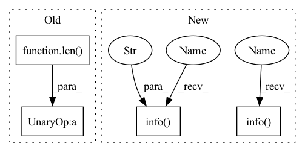

Pattern ID :10422
Before Change
def stop_background_task(method):
if not len(background_processes[method]) :
return None
task_id, process = next(iter(background_processes[method].items()))After Change
def stop_background_task(method):
logger.info(f"Kill background task for {method}" )
if not background_tasks.get(method) or not background_processes.get(method):
return None
task_id, process = next(iter(background_processes[method].items()))
process.kill()
background_processes[method].pop(task_id, None)
logger.info( f"Killed background process: {process}")
task = [task for task in background_tasks[method] if task["id"] == task_id][0]
task["status"] = "STOPPED"
task["end_ts"] = datetime.today().strftime("%Y-%m-%d %H:%M:%S")In pattern: SUPERPATTERN
Frequency: 3
Non-data size: 4
Instances Fragment ID: 36425034
Project Name: project-monai/monailabel
Commit Name: bbd475dbf6b759304d64ba620e1df895c5c7579f
Time: 2021-05-28
Author: sachidanand.alle@gmail.com
File Name: monailabel/utils/others/async_tasks.py
M Class Name: AnonimousClass
N Class Name: AnonimousClass
M Method Name: stop_background_task(1)
N Method Name: stop_background_task(1)
M Parent Class:
N Parent Class:
M File Name: monailabel/utils/others/async_tasks.py
N File Name: monailabel/utils/others/async_tasks.py
M Start Line: 79
M End Line: 79
N Start Line: 88
N End Line: 95
Before Change
)
logging.info(
"merge_in input at: ",
len( container.all_layers) - 1,
" shape: ",
container.all_layers[-1].shape,
" plus: ",After Change
container.all_layers.append(
Input(shape=[config.merge_in], name=config.module_name + "_merge_in")
)
logging.info(
f"merge_in input at: {len(container.all_layers) - 1} "
f"shape: {container.all_layers[-1].shape} "
f"plus: {container.all_layers[-2].shape}"
)
container.in_index.append(len(container.all_layers) - 1)
layers = []
layers.append(container.all_layers[-1])
layers.append(container.all_layers[-2])
container.all_layers.append(Concatenate()(layers))
size = np.prod(container.all_layers[-1].shape[1]) // skip the junk first dimension
if config.module_name + ".weight" in container.weights:
weights = np.transpose(
container.weights[config.module_name + ".weight"], (1, 0)
)
bias = container.weights[config.module_name + ".bias"]
else:
logging.error("weights missing")
logging.error("Using fake weights for Linear layer")
weights = np.random.rand(size, config.outputs)
bias = np.random.rand(config.outputs)
container.fake_weights = True
logging.info(
f"total input size: {size} "
f"output size: {config.outputs} "
f"weights: {weights.shape}"
)
if (weights.shape[0], weights.shape[1]) != (size, config.outputs):
container.fake_weights = True
logging.error("Using fake weights for Linear layer")
weights = np.random.rand(size, config.outputs) Fragment ID: 36425038
Project Name: twentybn/sense
Commit Name: 8e6955e7a6800751ede679524d94eb49d0ae9136
Time: 2021-02-08
Author: florian.letsch@twentybn.com
File Name: tools/conversion/section_conversion.py
M Class Name: AnonimousClass
N Class Name: AnonimousClass
M Method Name: linear(2)
N Method Name: linear(2)
M Parent Class:
N Parent Class:
M File Name: tools/conversion/section_conversion.py
N File Name: tools/conversion/section_conversion.py
M Start Line: 587
M End Line: 635
N Start Line: 562
N End Line: 589
Before Change
container.all_layers.append(
Input(shape=(image_size[0], image_size[1], config.merge_in), name=xx)
)
logging.info("merge_in input at: ", len( container.all_layers) - 1)
container.in_index.append(len(container.all_layers) - 1)
padding = "same" if config.pad == 1 and config.stride == 1 else "valid"After Change
if config.module_name + ".weight" in container.weights:
conv_weights_pt = container.weights[config.module_name + ".weight"]
shape = container.weights[config.module_name + ".weight"].shape
logging.info(f"weight: {config.module_name}.weight {shape}" )
// convert to tsize list of 2d conv weight matrices, transposed for Keras
w_list = []
if len(conv_weights_pt.shape) == 5: // check if this is a 3D conv being unfolded
for t in range(config.tsize):
w_list.append(
np.transpose(
conv_weights_pt[:, :, config.tsize - 1 - t, :, :], [2, 3, 1, 0]
)
)
else: // this is simply a single 2D conv
w_list.append(np.transpose(conv_weights_pt[:, :, :, :], [2, 3, 1, 0]))
// concatenate along the in_dim axis the tsize matrices
conv_weights = np.concatenate(w_list, axis=2)
if not config.batch_normalize:
conv_bias = container.weights[config.module_name + ".bias"]
else:
logging.info(f"cannot find weight: {config.module_name}.weight")
container.fake_weights = True
conv_weights = np.random.rand(
config.size, config.size, config.tsize * input_channels, config.filters
)
conv_bias = np.zeros(config.filters)
if config.batch_normalize:
bn_bias = container.weights[config.module_name + ".batchnorm.bias"]
bn_weight = container.weights[config.module_name + ".batchnorm.weight"]
bn_running_var = container.weights[
config.module_name + ".batchnorm.running_var"
]
bn_running_mean = container.weights[
config.module_name + ".batchnorm.running_mean"
]
bn_weight_list = [
bn_weight, // scale gamma
bn_bias, // shift beta
bn_running_mean, // running mean
bn_running_var, // running var
]
expected_weights_shape = (
config.size,
config.size,
config.tsize * input_channels,
config.filters,
)
logging.info(
f"weight shape, expected : {expected_weights_shape} "
f"checkpoint: {conv_weights_pt.shape} "
f"created: {conv_weights.shape} "
)
if conv_weights.shape != expected_weights_shape:
logging.info("weight matrix shape is wrong, making a fake one")
container.fake_weights = True Fragment ID: 36425037
Project Name: twentybn/sense
Commit Name: 8e6955e7a6800751ede679524d94eb49d0ae9136
Time: 2021-02-08
Author: florian.letsch@twentybn.com
File Name: tools/conversion/section_conversion.py
M Class Name: AnonimousClass
N Class Name: AnonimousClass
M Method Name: convolutional(2)
N Method Name: convolutional(2)
M Parent Class:
N Parent Class:
M File Name: tools/conversion/section_conversion.py
N File Name: tools/conversion/section_conversion.py
M Start Line: 363
M End Line: 486
N Start Line: 394
N End Line: 446
Before Change
def stop_background_task(method):
if not len(background_processes[method]) :
return None
task_id, process = next(iter(background_processes[method].items()))After Change
def stop_background_task(method):
logger.info( f"Kill background task for {method}")
if not background_tasks.get(method) or not background_processes.get(method):
return None
task_id, process = next(iter(background_processes[method].items()))
process.kill()
background_processes[method].pop(task_id, None)
logger.info(f"Killed background process: {process}" )
task = [task for task in background_tasks[method] if task["id"] == task_id][0]
task["status"] = "STOPPED"
task["end_ts"] = datetime.today().strftime("%Y-%m-%d %H:%M:%S") Fragment ID: 36425045
Project Name: project-monai/monailabel
Commit Name: bbd475dbf6b759304d64ba620e1df895c5c7579f
Time: 2021-05-28
Author: sachidanand.alle@gmail.com
File Name: monailabel/utils/others/async_tasks.py
M Class Name: AnonimousClass
N Class Name: AnonimousClass
M Method Name: stop_background_task(1)
N Method Name: stop_background_task(1)
M Parent Class:
N Parent Class:
M File Name: monailabel/utils/others/async_tasks.py
N File Name: monailabel/utils/others/async_tasks.py
M Start Line: 79
M End Line: 79
N Start Line: 88
N End Line: 95